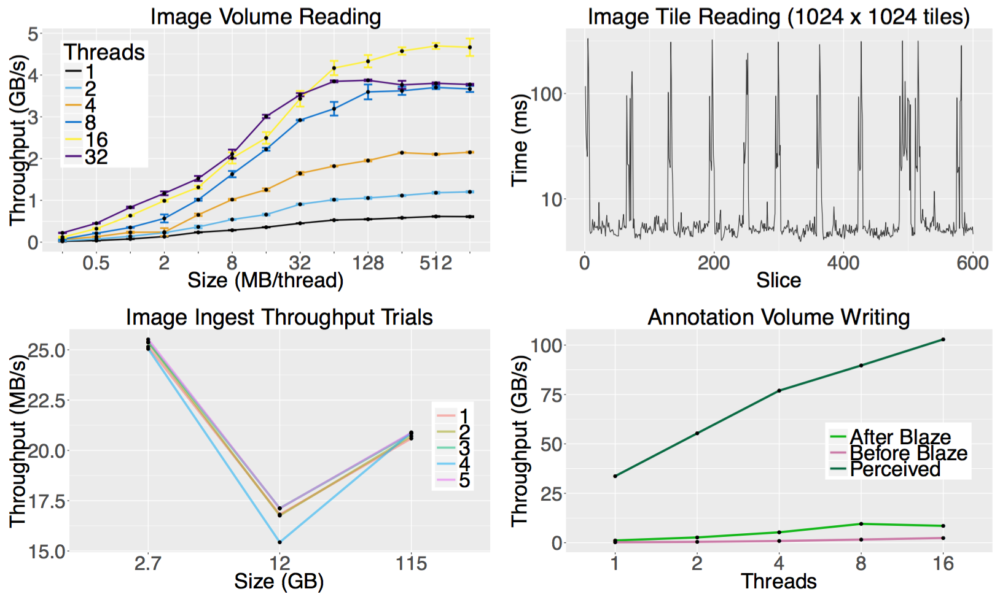
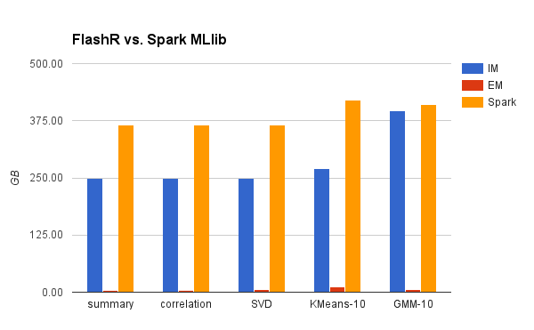

[*Back*](./index.html)
# Computer Science
## Store
### Images
In the project one of the workload is to run computer vision algorithms at scale to detect cell bodies in the data. This workload can be split into three sections to provide a better understanding of the problem. First section, reading sub volumes of data from the spatial database using multiple readers. The NDStore backend is scalable and is capable of upto 9GB/sec read throughput one a single node running MySQL. Usually, we run multiple nodes providing much higher read throughput. Second section, to detect cell bodies in the data using a large compute cluster. We will talk more about this in the next section. Third section, to write the detected cell bodies as annotation back to the database. We can achieve upto 1.5GB/sec write throughput with 16 threads on a single nodes running MySQL. With high read and write throughput we avoid bottlenecks in the first and third section for large scale runs.
You can reproduce our Read/Write throughput benchmarks using the following steps:
- Launch the AWS AMI "ami-id Here".
- Run the ndstore_benchmark.py in the benchmarks folder. The commands to run the read and write benchmarks are mentioned in the README file. These commands will generate csv files for the respective benchmarks.
- Run the ThroughPlots.r script in the Plots folder. This script will generate the thorughput graphs included in the paper.
You can reproduce our Tilecache benchmarks using the following steps:
- Launch the AWS AMI "ami-id here".
- Run the ndtilecache_benchmark.py script in the benchmarksfolder. The command to run the benchmarks are mentioned in the README file. file. These commands will generate the csv file for the benchmark.
- Run the TilecachePlots.r script in the Plots folder. This script will generate the tilecache graph in the paper.
NDBlaze is a memory based buffer using Redis and Spark that accelerates random writes to a spatial database. It improves the user-perceived write throughput by up to 38 times and the I/O throughput to disk by 3.3 times. All interfaces to this system are RESTful web services and they provide a consistent view of the data to the user.

Figure above shows the write throughput of the NDBlaze as a function of data blob size for different number of threads. We refer to these results as the perceived write throughput, because the user witnesses these data completion rates for I/O bursts. We achieve a peak write throughput of 108GB/sec for 128 threads and 1GB data blob size.
Beyond burst performance, NDBlaze improves the sustained I/O performance to the spatial database, because it makes I/O more sequential. Figure above shows the write throughput to NDBlaze from the write queue. For this benchmark, we pre-fill the queue with 16GB of merged and spatial index sorted data, which is then written by celery workers. We experiment over multiple celery workers ranging from 1 to 16 and receive a peak at 8 workers of 9.5GB/sec which is about 3.3 times faster then 2.8GB/sec peak for random writes with 32 workers.
### Shapes
The vast majority of the imaging data we collect is 3-dimensional data imaged in 2-dimensional slices. Analysis is done on each slice, creating a series of 2-dimensional analysis overlays which we call “annotations”. These annotations can be skeleton annotations, where a centroid or a particularly interesting point is labeled and multiple points are connected, or paint annotations, where cells or intracellular components are labeled by “coloring”. There is high demand from the neuroscience community for 3D visualization of these annotations, both for quality control and analysis purposes.
In the course of investigating 3D visualization of annotations, it became clear that we needed to generate the 3D representation of the annotation. Initially, we hoped to generate 3D representations on-the-fly. But, after generating different 3D representations, we believe a mesh or line segment based representation will be more compact than the 2D representation we currently store. To investigate further, we are building a geometric object database that stores mesh or segment representations of 3D objects using the same spatial layout as ND Store. We have built a prototype of the database and are currently in the process of accelerating the code used to generate the 3D representation of an annotation and insert it. The process of generating these representations is more compute-intensive than the process of inserting images into ND Store. Thus, we have been utilizing new programming technologies, such as the Go programming language, to leverage parallelism from the start and optimize memory usage. We plan to develop a prototype of the database and run comparisons between the 3D representations in the geometric object database and the image-based representations in ND store.
### Graphs with Rich Attributes Database
We develop a searchable database of biologically derived graphs that contain a rich spectrum of metadata-like attributes that are commonly associated with common exploratory graph analysis techniques. We partition the database by genus; we currently store 7 different genera, totalling nearly 30 non-human graphs and another 700 human graphs.
Our database is accessible via scalable web-services at [http://www.openconnecto.me/graph-services/download/](http://www.openconnecto.me/graph-services/download/). We provide mechanisms to downsample, rescale and convert graph format to nearly a dozen commonly used graph formats all with a single click. We accelerate commonly used functionality like downsampling and format conversions using optimized C++ bindings.
We develop highly scalable backend capabilities using the lightweight task queuing framework, RabbitMQ that has asynchronous callback jobs submitted to it directly through the Python interface, Celery.
### Utilities
#### Laboratory Information Management System
We use a document-based (schemaless) database built in MongoDB to store dataset metadata. These data can be accessed and manipulated via a public-facing RESTful API, provided through the Meteor JavaScript platform. NeuroData LIMS (ndlims) can attach documents — freeform JSON trees — to arbitrary objects for retrieval. That is, we have attached individual document records to each token-channel pair as defined in ndstore, with the intention of allowing document-attachment to RAMON, locations in ndviz, features in an MR scan, or other objects in the future.
#### Python API
We provide ndio, a publicly accessible Python API, to aid in interactions with ndstore, ndlims, grute, and other NeuroData services. ndio is available on the [Python Package Index](https://pypi.python.org/pypi/ndio/), with a stable version 1.0 planned for release at the end of March 2016. This API enables big data neuroscience for researchers from a wide-variety of backgrounds and experience levels. RESTful queries and database details are handled by the API, which allows users to complete basic queries, gets and puts with only a few lines of code.
## Explore
### Images
We built an open-source Web application, NeuroDataViz, that allows users to load multi-TB image datasets in their Web browser. When ingesting a new dataset, we downsample the raw image files multiple times to create an image hierarchy. Each level of the image hierarchy is further chopped up into cuboids. By leveraging this subdivison of images, we are able to load large volumes of data (by using the downsampled representation) quickly, and then loading higher resolution cuboids as the user zooms in. NeuroDataViz also leverages our backend infrastructure to provide point-and-click metadata support, false coloring, and fast loads when panning back and forth through z-space (by caching tiles/cuboids as they leave the server). Several public projects are available for browsing. Visit http://viz.neurodata.io/ and click “Data” in the upper-right corner of the navigation bar.
Recently, we rewrote the NeuroDataViz frontend to use WebGL to render tiles instead of displaying them as static images. Using WebGL means we can take advantage of the power of the users graphics card (even mobile phones have very powerful graphics processors integrated into their SoC, or system-on-a-chip) to enable dynamic image processing and image effects. For example, our blend mode is now faster and more accurate, since we can define our own blending functions (e.g. additive blending allows you to display two datasets overlaid in two different colors, and easily see overlap by looking for a new, third color). We also support intensity remapping (in effect allowing the user to adjust brightness and contrast) as well as gamma correction. Finally, we support dynamic false coloring of each individual layer. Not only can the user change the color of a layer on demand, but we now deliver 8-bit images, instead of 32-bit colored images, a 4-fold decrease in bandwidth usage. These options are available for use on all our public NeuroDataViz projects and are also shown in the figure below.
One important statistics use case is resampling 16-bit images to fit into 8-bit image space.
The data for many image datasets is obtained using a 12-bit camera, but is stored in a 16-bit file format.
To properly view the images, the 16-bit image must be re-sampled into an 8-bit image.
Typically, a new intensity range (or intensity "window") is set, with the minimum intensity value corresponding to some small percentage (e.g. 5\%) of the overall intensity value in the 16-bit dataset and the maximum intensity value corresponding to a large percentage (e.g. 99\%) of the overall intensity value.

Figure: Image processing controls on a multi-spectral dataset in NeuroDataViz.
We also added a Maximum Intensity Projection service to NDStore and backended it in NeuroDataViz. Maximum intensity projection allows the user to visualize a 3D stack of images in a 2D plane with more context than viewing slice-by-slice. The figure below shows a maximum intensity projected Array Tomography dataset from our synaptomes collaboration. More datasets are available at http://synaptomes.neurodata.io/ndv/.

Figure: Maximum intensity projection of an Array Tomography dataset in NeuroDataViz.
In addition to its image display capabilities, we have added a backend management interface, allowing users to create their own Visualization Projects (VizProjects). This tool is designed to leverage community resources, further enabling members of the community to do analysis on publicly released data. For example, a potential user might run a machine learning algorithm on some Electron Microscopy (EM) data. The user could then upload the result to our backend systems and visualize an overlay of their result on top of the original EM dataset. They could even load existing, public results for comparison purposes. We have rolled this management interface out to our internal team, and are planning on publicly releasing it soon. Documentation is available at http://docs.neurodata.io/ndviz/ under “Management”.
### Shapes
A 3D web-based visualization tool for neuroscience data is in high demand. 3D representations are helpful for both quality control (whether it’s checking an algorithm or viewing data as it comes off the microscope) as well as analysis. We have modified an existing desktop-based 3D viewer and are beginning to develop a Web-based version, utilizing WebGL. WebGL allows browser-based code to run on the end users graphics card. Almost all new smartphones support WebGL, and include powerful graphics processors. Therefore, a WebGL-based viewer will be cross-platform compatible, fast, and provide good 3D support. We are in the process of modifying NeuroDataViz to use WebGL for basic image processing. Once 2D WebGL is integrated into NeuroDataViz, we will begin to add 3D support.
### Graphs
We provide a web application using the R Shiny package for real-time exploratory analysis of graphs. While the application is optimized for small to medium sized datasets, it is scalable for large datasets as well. Functionality includes:
- Visualization:
- Visualizing graphs stored in the neurodata database
- Includes Fly, Cat, Mouse, etc.
- User can load data in various graph formats for visualization
- Acceptable formats include edgelist, pajek, ncol, lgl, graphml, dimacs, graphdb, gml, dl
- Generation and visualization of classical graphs
- Includes Erdos Renyi, Barabasi, Random Dot Product, K Regular, etc.
- Visualization of community structures in the graph with various algorithms
- Analysis:
- Computation of graph invariants and statistics
- Tabular and Graphical representations
- Adjacency matrix generation
- Vertex and edge attribute generation
- Parameter modulation for non pre-loaded graphs
We also built a web visualization to explore the graph interactively. Utilizing D3 and plotly, this application allows free rotation, shifting and zooming of plot object for each visualization. We currently have implemented the functions for:
- Graph layout
- Degree distribution
- Adjecency and Laplacian
- Latent space embedding
- k-means for stochastic block model

Figure: Interactive visualization for graph exploration.
### Matrices
We have used the R Shiny package to develop a web application that allows for real-time visualization of small to medium sized datasets. Upon uploading a dataset (the current release accepts csv, xlsx, and txt files), the user has the following capabilities:
- Visualizing the data in a table format with column reordering, sorting, and searching
- Selecting a subset of the data for further analysis
- Constructing a heatmap and dendrogram for the remaining data. For data with a large number of samples or features the dendrogram option is disabled.
- Constructing the marginal distributions of the the data feature columns with the option of conditioning on a class column of the user's choosing
- Using Mahalanobis distance to flag outliers within the data at a certain significance level
- Constructing the Pearson correlation and distance matrix of the selected data
- Visualizing the distribution of the feature columns via a scatter plot, box plot, and violin plot
- Using PCA or t-SNE to 2D embed the data and visualize it
- Using k-means to cluster the embedded data into a chosen number of clusters
The latter 2 features are shown in the figure below:

Figure: PCA embedding and k-means clustering of Iris R dataset with corresponding scree plot
The code is open-source and is available [here](https://github.com/neurodata/Matrix-Explorer).
## Parse
### Images
#### Volume Reconstruction

#### 2D Stitching Artifact Removal
We leverage the Distributed MultiGrid Poisson solver [KSH](http://www.cs.jhu.edu/~misha/MyPapers/ToG10.pdf) to address 2D image stitching artefacts. The code is open source and available on github with tutorials [here](https://github.com/mkazhdan/DMG).
#### 3D Histogram Normalization
We leverage Gradient Domain Fusion [KLR](http://arxiv.org/pdf/1506.02079v1.pdf) to address 3D image stitching artefacts. The code is open source and available with tutorials [here](http://www.cs.jhu.edu/~misha/Code/GradientDomainFusion/Version1.0/).
#### Volume Registration
The most efficient way to annotate image volumes is to register them to a standard atlas.
Thus an image registration pipeline to do this was developed. The registration pipeline consisted of rigid, affine and then deformable registration. Deformable registration was done by the Large Deformation Diffeomorphic Metric Mapping Algorithm (LDDMM), an algorithm which computes smooth invertible transform between image volumes. NeuroData Registration (ndreg), a python module to create LDDMM-based registration pipelines was developed. The module can be downloaded at https://github.com/neurodata/ndreg.
### Shapes
New neuroimaging datasets are large (10GB-100TB), and volumes may soon exceed a
petabyte for some modalities. Object detection is a canonical problem in computer vision, so a
rich library of techniques is available to aid in neuroscience inference tasks. However, Big Vision requires a paradigm shift to overcome challenges such as data storage, computation and multiscale semantic understanding. We have developed open-source tools for scalable object detection (http://github.com/neurodata/ndparse), leveraging the databases and datasets available at neurodata. This allows users to quickly adapt their algorithms in a flexible, reproducible environment. As a case study we demonstrate our pipeline by generating and deploying a lightweight, scalable synapse detector to find approximately 50,000 putative synapses in 60,000 um^3 of electron microscopy data.
### Graphs
#### functional MRI
Utilizing CPAC (Configurable Pipeline for the Analysis of Connectomes), we have estimated human connectomes from structural and functional MR images. Using Amazon EC2 instances, we were able to process and extract timeseries data for over 3,000 scans using 64 pipelines, which we then analyzed using our open source software to produce 210,000 graphs. We have made all graphs publicly available http://docs.neurodata.io/nddocs/mrgraphs/processed_data.html, and are in the process of analyzing optimal pipeline strategies to extract connectomes that are most easily discriminable by subject.
#### diffusion MRI
We have developed a pipeline that leverages existing processing tools in the community and estimates human connectomes from structural and diffusion MR images. Our open-source scalable pipeline, ndmg, found at http://m2g.io, abstracts hyper-parameter selection from users and estimates connectomes reliably for downstream inference tasks.
The ndmg pipeline is able to be run on both standalone personal computers with minimal complexity for installation, as well as scale to be deployed across large computational clusters. Tutorials exist which help users install the software, prepare their data, generate graphs, and analyze their data. The ndmg pipeline and associated resources significantly lower the barrier for entry to human connectome estimation and analysis.

#### electron microscopy
Reconstructing a map of neuronal connectivity is a critical challenge in contemporary neuroscience. Recent advances in high-throughput serial section electron microscopy (EM) have produced massive 3D image volumes of nanoscale brain tissue for the first time. The resolution of EM allows for individual neurons and their synaptic connections to be directly observed. Recovering neuronal networks by manually tracing each neuronal process at this scale is unmanageable, and therefore researchers are developing automated image processing modules. Thus far, state-of-the-art algorithms focus only on the solution to a particular task (e.g., neuron segmentation or synapse identification).
We built the first known fully automated images-to-graphs pipeline (i.e., a pipeline that begins with an imaged volume of neural tissue and produces a brain graph without any human interaction). To evaluate overall performance and select the best parameters and methods, we also develop a metric to assess the quality of the output graphs. We evaluate a set of algorithms and parameters, searching possible operating points to identify the best available brain graph for our assessment metric. Finally, we deploy a reference end-to-end version of the pipeline on a large, publicly available data set. This provides a baseline result and framework for community analysis and future algorithm development and testing. All code and data derivatives have been made publicly available toward eventually unlocking new biofidelic computational primitives and understanding of neuropathologies.
## Analyze
### Images
Camera resolution in all devices has increased as technology has improved. This has been particularly true for light microscopy, where camera resolution has increased past the point where 8-bit image formats are adequate, and 16-bit images are now becoming standard for light microscopy applications. However, very few technologies exist for displaying 16-bit images. We have developed a resampling function in ND Store (which we call the image “window”) and a corresponding front-end service to help the end user determine an appropriate window. A demonstration of the service is available at http://brainviz1.cs.jhu.edu/tra/windowexplorer/ (try ‘kharris15apical’ as the token and ‘em’ as the channel for an 8-bit example, or ‘Aratome15d_S19_W05’ and ‘dapi’ for a 16-bit example, setting the y-range to be from 100 to 1100). Our Window Explorer loads a histogram from ND Store, calculates some basic statistics from the histogram, then loads an image sample and allows the user to tweak the current window. Window values can be put back into ND Store to ensure 16-bit images display properly in NeuroDataViz.
### Shapes
Registering a template object (e.g. brain structure) to a target object with LDDMM lets us quantify how much the objects’ shapes differ from each other. LDDMM computes a smooth time varying velocity field which deforms the template to the target. This velocity field can be integrated in time to get a displacement field. By integrating this displacement over the template object’s space one can determine the “distance” between a template and target object.
### Graphs
We implement the following graph algorithms with C++ in FlashGraph and provide R bindings for the C++ implementation. C++ code: https://github.com/zheng-da/FlashX/tree/release/flash-graph/libgraph-algs. R wrapper: https://github.com/zheng-da/FlashX/blob/release/Rpkg/R/flashgraph.R. Tutorial: https://github.com/zheng-da/FlashX/wiki/FlashGraphR-programming-tutorial
- Betweenness centrality
- Breadth first search
- Diameter estimation
- Triangle counting
- K-core
- Scan statistics
- PageRank
- Strongly connected components
- Weakly connected components
### Matrices
#### k-means
We radically improve the performance of k-means for both in-memory applications and those too large to fit into main memory. We modify Lloyd’s batch method for modern NUMA multi-core environments. We prioritize local memory accesses, reduced data structure interference, and intelligently adaptive scheduling of computation to produce an in-memory routine that performs up to several orders of magnitude better than state-of-the-art systems like [Spark’s MLlib](http://spark.apache.org/mllib/), [GraphLab Create (Dato)](https://dato.com/) and [H2O](http://www.h2o.ai/), while consistently using less resources. We further develop a highly scalable routine that operates out-of-core to perform clustering on data too large for RAM. We modify FlashGraph to support matrix-like computations required for k-means. We then optimize FlashGraph’s functionality by introducing a row cache that supersedes the page cache to boost performance by nearly 50%. We are able to perform clustering on billion-node datasets on a single machine, out-performing distributed in-memory systems from the perspective of resources, time and power consumption. The code can be found [here](https://github.com/zheng-da/FlashX/tree/disa-graph-attr/flash-graph). We show the performance of our implementation and contrast them with other state-of-the-art libraries below on a dataset with 66 Million datapoints, 8 dimensions and K (# clusters = 10).

Figure: The per iteration performance of k||means, k||means with triangle inequality pruning and SEM-k||means compared to other systems.

Figure: The peak memory usage of k||means, k||means with triangle inequality pruning and SEM-k||means compared to other systems.
#### FlashMatrix
We develop FlashMatrix, a programming framework that provides a high-level
matrix-oriented functional programming interface for large-scale data analysis;
users write R code and FlashMatrix executes them efficiently. It reimplements
many matrix operations from the R base package to execute R code
in parallel and out of core automatically. FlashMatrix scales matrix
operations beyond memory capacity by utilizing solid-state drives (SSDs).
As such, FlashMatrix is a simple platform for users to experiment new machine
learning algorithms for large datasets.
The paper on the design of FlashMatrix is published on arxiv: http://arxiv.org/pdf/1604.06414v1.pdf
#### gmm
We implement Gaussian Mixture Model in FlashMatrix with pure R code. The R implementation does not have any explicit parallelization in the R code and FlashMatrix execute the code in parallel automatically and is able to scale it to very large datasets with hundreds of millions of data points. Our experiment shows that our R implementation outperforms the implementation in Spark MLlib on a large parallel machine.
R code: https://github.com/zheng-da/FlashX/blob/dev-zd/Rpkg/R/GMM.R
#### LOL
We implement new machine learning algorithms called LOL for high-dimension datasets and measure its performance (both runtime speed and accuracy when used for classification) on very large datasets. Again, LOL is implemented in the R code completely. We show that the R implementation of LOL scales to datasets with hundreds of millions of dimensions and has high precision when being used for classification.

Figure: The scalability of LOL and prediction accuracy when used in classification.
R code: https://github.com/zheng-da/FlashX/blob/dev-zd/Rpkg/R/LOL.R
#### other stuff
Similarly, we implement some other machine learning algorithms such as KMeans and singular value decomposition, and some statistics computation in FlashMatrix with pure R code. All of these implementations are executed in parallel and out of core automatically in FlashMatrix and scale to very large dense matrices. The experiments below compare the FlashMatrix implementations with the ones in Spark MLlib. The in-memory and out-of-core execution of these applications in FlashMatrix significantly outperforms the implementations in Spark MLlib, even though Spark MLlib keeps all data in memory. In addition, the out-of-core execution of FlashMatrix consumes little memory while achieving performance comparable to the in-memory execution of FlashMatrix.

The runtime of FlashMatrix both in memory (IM) and on SSDs (EM) vs. Spark MLlib on a dataset with one billion data points.

The memory consumption of FlashMatrix both in memory (IM) and on SSDs (EM) vs. Spark MLlib on a dataset with one billion data points.
- R code: https://github.com/zheng-da/FlashX/tree/dev-zd/Rpkg/R
- Tutorial of FlashMatrix: https://github.com/zheng-da/FlashX/wiki/FlashR-programming-tutorial
[*Back*](./index.html)